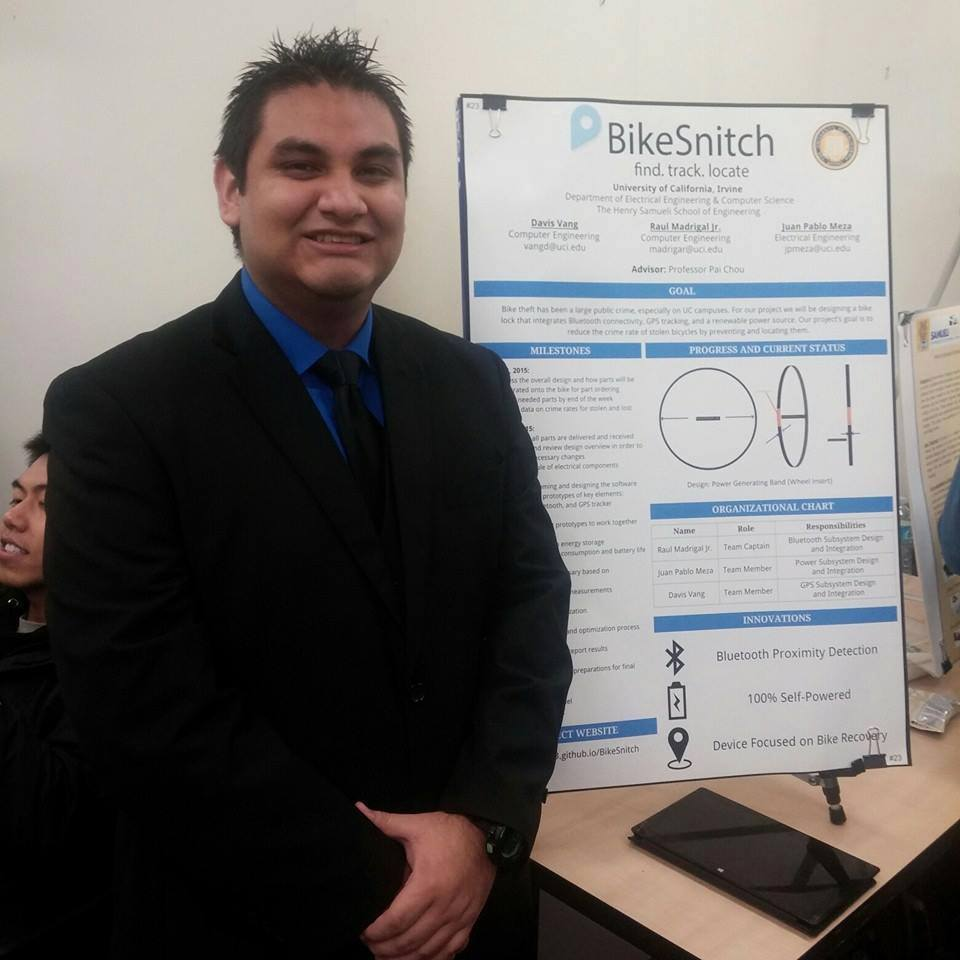

This website is about the app My Hero On the Go on Android
This project is supervised by Professor Phillip Sheu
at University of California, Irvine
Because we all need motivation
Project Overview
This project is the mobile gateway to connect the user to the large database of inspirational hero database from MyHero.com.
We aim to provide user with inspirations wherever they go and whatever difficulty they may face.
Project description
Problem
My Hero has some issues in the viewpoint of the mobile user. First, the website is not mobile-phone friendly. When visiting the website, the desktop version of My Hero appears, which makes navigating the website through mobile means difficult. For example, clicking the link to a different page will instead go to an undesired link due to the website's design. In addition, users want easier access to videos and sound files on their mobile devices. As stated before, the My Hero website, at its current state, is unfriendly to mobile devices. To make it easier for mobile users, there must be an easier interface to access My Hero's interactive media. Last, the My Hero organization does not have an Android app. According to Bosomworth from Smart Insights, a digital marketing analytics company, mobile users have increased over desktop users in 2014. Therefore, reaching the mobile market will increase the amount of users for My Hero. Therefore, these are the problems that the My Hero site is encountering in this mobile internet era.
Justification
The My Hero organization needs an Android app for its goals. First, the organization is looking forward for an Android app. One of the speakers from My Hero implied that they needed an Android app. In addition, mobile apps make accessing interactive data easier than visiting through a website directly. For example, if the user wants to watch a video, the requested video is easier to accessed through an app. Last, most of My Hero's users are teachers and students in K-12 schools, and most of these schools are implementing iPads and tablets to their educational plans. Many young children are growing up with tablets and smartphones, so primary and secondary education are using these emerging technologies to make education more accessible. In addition, education in developing countries utilizes mobile technology, so having an Android app spreads My Hero's content to more potential users. Therefore, an Android app allows more access.
Functionalities
- Access MyHero.com database of stories, arts and movies
- Upload personal content to MyHero.com database
- Get a daily selection of stories, arts and movies from MyHero.com
Milestone
| Week 1 | Access to read/write to MyHero.com database |
| Week 2 | Develop User Interface for the application |
| Week 3 | Use User Interface to read/write to MyHero.com database |
| Week 4 | Implement daily reminder of a hero story |
| Week 5 | Finalize documentation and application |
Weekly Report
Team information
| Quan Chau is a senior student majored in Computer Engineering at University of California, Irvine. Quan's experience includes internship at Broadcom Corporation and undergraduate research with Professor Mohammad Al Faruque. Quan is proficient in multiple programming languages such as Java, C++, C and Python. Quan is interested in creating applications with large sensor networks and processing collected data. | |
|  | My name is Raul Madrigal Jr. and I am a fourth year computer engineer at UCI. I always have had a passion for computers and electronics ever since I was five years old. I was always tinkering with things to figure out how they worked. However, I was never exposed to any type of computing until I finally got to UCI. After learning both computer hardware and software, it still baffles me as to this day how they are able to operate and simplify our lives for the better. My current focus is on design of computer hardware and systems and my goal is to work for a company that will create the next best hardware innovation, which will benefit society in a positive way with a lot less negative draw backs such as making society lazier. |
| My name is Ryan Morrison and my primary interest is embedded systems with particular attention to automotive applications. I also enjoy creating IoT devices. My principal belief as an engineer is to develop solutions to common problems while also enhancing quality of life. That being said, the opportunity to bring the My Hero website into the mobile space is exciting. I look forward to creating new collaborative features for My Hero, while also potentially exposing a larger user-base to their positive social media service. | |
| My name is Jon Raphael Apostol, and I am a fourth year electrical engineering student from University of California, Irvine. I started using a computer when I was 2 years old with Windows 95. Also, I started playing around with HTML when I was in 7th grade, and I started teaching myself C++ when I was in 8th grade. I am proficient in C++, Java, and HTML.Despite being an electrical engineering student, I am interested in computer networks, software engineering and digital signal processing. |